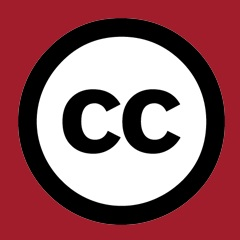

Creative Commons Road Trip 2015
BY ELIZABETH HERITAGE
We’re going on a road trip -- please join us!
Recently, my Creative Commons Aotearoa NZ (CCANZ) colleague Matt McGregor wrote an article setting out our goals here at CCANZ, and the thinking behind them.
In general, these goals centre on CCANZ assisting a range of public-sector organisations with open policy adoption and implementation, with a particular focus on the heritage, research and schools sectors. Our workplan focuses on providing a heap of in-person workshops and resources, including targeted policy toolkits, brochures, posters and discussion pieces from the CC community. … While we still support licence adoption in the creative sector, and still support sensible copyright reform, open policy advocacy has become the clearest path for a small NGO like CCANZ to contribute to lasting social change.
Now it’s time for us to hit the road and really help that change take off. Firstly, we’re developing a whole new set of resources to enable Kiwis to understand how copyright works in Aotearoa and how Creative Commons can help people solve copyright-related problems in the workplace. No law degree required! We have created special, sector-specific toolkits for use in NZ schools, universities, polytechs, museums, archives, libraries and other educational or heritage institutions. These are all freely available at resources.creativecommons.org.nz and include policy templates, case studies, posters, educational videos, slides and articles.
- Off-the-shelf policy templates that have been tried and tested in Kiwi institutions -- just change the names!
- Fully up to date and compliant with NZ law
- Created in consultation with people whose day job is copyright licensing, and designed to help solve real-life, specific problems
- Detailed case studies showing how Kiwis around the country are using Creative Commons to help solve copyright problems
- Simple and easy to use -- no copyright expertise required!
- Written by a combination of experts with detailed working knowledge of copyright law, Creative Commons licensing, and how these issues specifically pertain to the educational and heritage sectors in Aotearoa.
 Creative Commons Aotearoa New Zealand. Logo licensed CC BY.
{kind=link}
Secondly, as well as making these resources freely downloadable to everyone who comes to our website, we are also taking them to schools and heritage institutions around the country -- in fact, we’re going on a road trip! We've made a poster for schools and a poster for GLAM that we invite you to display and share.
We’ve gathered together a bunch of wonderful speakers from within the Creative Commons community who between them have decades of experience in negotiating the realities of copyright and licensing specifically in NZ schools and heritage institutions, including:
- Andrew Matangi, Consultant, Buddle Findlay, Creative Commons Aotearoa NZ Legal Team
- Victoria Leachman, Rights Advisor, Museum of New Zealand Te Papa Tongarewa
- Stephen Lethbridge, Principal, Taupaki School
- Matt McGregor, Public Lead, Creative Commons Aotearoa New Zealand (and me)
- Mark Osborne, Senior Consultant, Core Education
- Keitha Booth, Manager, NZ Open Government Data Programme
- Anton Angelo, Research Data Co-ordinator, University of Canterbury Te Whare Wānanga o Waitara
- Richard White, University Copyright Officer, University of Otago Te Whare Wānanga o Otāgo
- Amanda Curnow, Web Technologies Librarian, Massey University Library Te Putanga Ki Te Ao Mātauranga
- Thomasin Sleigh, Community Manager, Digital NZ; Member, Open Knowledge Foundation, Open GLAM Working Group
- Mark Crookston, Digital Collection Strategy Leader, Alexander Turnbull Library
- Esther Casey, Facilitator, Cognition Education
- Stephen McConnachie, ELearning Coordinator, Middleton Grange School
We’re running more than a dozen (and counting!) events all across the country in March 2015. Details and registration at creativecommons.org.nz/glamroadtrip for the GLAM sector and creativecommons.org.nz/schoolsroadtrip for schools.
We are really keen to reach as many people as possible, so if you want to host an event at your place, please let us know: matt@creativecommons.org.nz
Elizabeth Heritage is the Communications Lead at Creative Commons Aotearoa New Zealand.